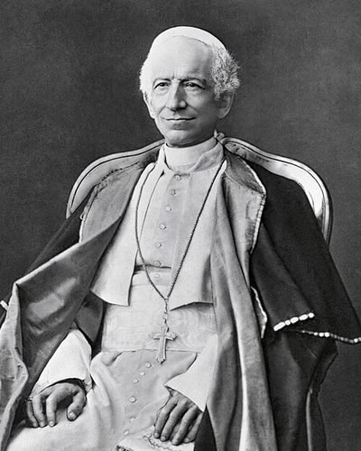

Ideologies / Conservative
What is Catholic Social Teaching?
Catholic Social Teaching is a political ideology in the Conservative family. The encyclical answers the misery of industrial workers without accepting socialism. Private property is a natural right, and abolishing it would harm workers most. But employers owe a wage that can keep a thrifty worker and family, and the state must protect the poor, limit working hours and shield women and children. Workers may form their own associations. The classes are not natural enemies and are bound by mutual duties that the Church teaches.
Capital cannot do without labour, nor labour without capital.
Defined from: Pope Leo XIII, Rerum Novarum (1891)
See how close you are to Catholic Social Teaching Dare a friend to answer as one

.jpeg){kind=link}
Where Catholic Social Teaching stands on 13 axes
Each axis runs from 0 to 100. A score of 50 is the middle. On a classic compass it sits in the Libertarian Right quadrant.
| Axis | Position | Score | In words |
|---|---|---|---|
| EconomyMarket to Planned | 45 | Balanced | |
| OwnershipPrivate to Collective | 20 | Strongly Private | |
| RightsLiberty to Security | 50 | Balanced | |
| GovernmentDemocracy to Autocracy | 50 | Balanced | |
| StructureDecentralised to Centralised | 40 | Leans Decentralised | |
| NationInternationalist to Nationalist | 35 | Leans Internationalist | |
| ImmigrationMulticulturalist to Assimilationist | 50 | Balanced | |
| ValuesProgressive to Traditional | 90 | Very strongly Traditional | |
| TechnologyAccelerationist to Precautionary | 55 | Balanced | |
| EnvironmentIndustrialist to Environmentalist | 50 | Balanced | |
| ReligionSecular to Religious | 100 | Very strongly Religious | |
| MilitaryPacifist to Militarist | 35 | Leans Pacifist | |
| TradeFree Trade to Protectionist | 40 | Leans Free Trade |
Ideologies closest to Catholic Social Teaching
- Political Augustinianism88% alike
- Thomism86% alike
- Traditionalist Conservatism85% alike
- Christian Democracy85% alike
- Islamic Democracy84% alike
Its opposite on this map is Juche, at 30%.
Parties near Catholic Social Teaching
- Centre PartyGermany. The Soest Programme (1870)88% alike
- Anti Revolutionary PartyNetherlands. Our Programme (1879)85% alike
- Italian People's PartyItaly. Appeal to the Free and Strong (1919)82% alike
- Pakistan Tehreek e InsafPakistan. Shandaar Pakistan, Shandaar Mustaqbil (2024)81% alike
Common questions
What is Catholic Social Teaching?
Catholic Social Teaching is a political ideology in the Conservative family. The encyclical answers the misery of industrial workers without accepting socialism. Private property is a natural right, and abolishing it would harm workers most. But employers owe a wage that can keep a thrifty worker and family, and the state must protect the poor, limit working hours and shield women and children. Workers may form their own associations. The classes are not natural enemies and are bound by mutual duties that the Church teaches.
What does Catholic Social Teaching believe?
In one line: Capital cannot do without labour, nor labour without capital. Its strongest positions are Religious, Traditional, Private. The encyclical answers the misery of industrial workers without accepting socialism. Private property is a natural right, and abolishing it would harm workers most. But employers owe a wage that can keep a thrifty worker and family, and the state must protect the poor, limit working hours and shield women and children. Workers may form their own associations. The classes are not natural enemies and are bound by mutual duties that the Church teaches.
Who founded Catholic Social Teaching?
Catholic Social Teaching is defined here from Rerum Novarum (1891) by Pope Leo XIII. The thinker most tied to it is Pope Leo XIII (1810 to 1903).
Is Catholic Social Teaching left wing or right wing?
On a classic two axis compass Catholic Social Teaching falls in the Libertarian Right quadrant, which means the economic right and the middle between libertarian and authoritarian. Left and right hide a lot, though, which is why EthosScales scores it on thirteen separate axes.
How is Catholic Social Teaching different from Political Augustinianism?
They are close: 88% alike. The biggest gaps are on Ownership, where Catholic Social Teaching scores 20 and Political Augustinianism scores 35, and Rights, where Catholic Social Teaching scores 50 and Political Augustinianism scores 65. On each axis, 0 is one end and 100 is the other.
Think this is wrong? Suggest a correction. The scores are editorial estimates.